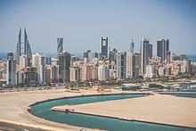

Economy of Bahrain
|  Manama skyline | |
| Currency | Bahraini dinar (BHD) |
|---|---|
| Calendar Year | |
Trade organisations | WTO and GCC |
Country group | |
| Statistics | |
| Population | |
| GDP | |
| GDP rank | |
GDP growth |
|
GDP per capita | |
GDP per capita rank | |
GDP by sector |
|
| 0.075% (2023)[4] | |
Population below poverty line | N/A[6] |
Labour force | |
Labour force by occupation |
|
| Unemployment |
|
Main industries | Petroleum processing and refining, Aluminum Smelting, Iron Pelletization, Fertilizers, Islamic and Offshore Banking, Insurance, Ship Repairing, Tourism |
| External | |
| Exports | $27.635 billion (2018 est.) |
Export goods | Petroleum and Petroleum Products, Aluminum, Textiles, Gold |
Main export partners | |
| Imports | $23.399 billion (2018 est.) |
Import goods | Crude Oil, Machinery, Chemicals, Gold, Jewellery |
Main import partners | |
Gross external debt | $52.15 billion (2017 est.) |
| Public finances | |
| Revenues | $5.854 billion (2017 est.) |
| Expenses | $9.407 billion (2017 est.) |
| |
All values, unless otherwise stated, are in US dollars. | |
{kind=link}
The economy of Bahrain is heavily dependent upon oil and gas.[14] The Bahraini Dinar is the second-highest-valued currency unit in the world.[15] Since the late 20th century, Bahrain has heavily invested in the banking and tourism sectors.[16] The country's capital, Manama is home to many large financial structures. Bahrain's finance industry is very successful. In 2008, Bahrain was named the world's fastest growing financial center by the City of London's Global Financial Centres Index.[17][18] Bahrain's banking and financial services sector, particularly Islamic banking, have benefited from the regional boom driven by demand for oil.[19] Petroleum is Bahrain's most exported product, accounting for 60% of export receipts, 70% of government revenues, and 11% of GDP.[20] Aluminium is the second most exported product, followed by finance and construction materials.[20]
According to the 2020 edition of the Index of Economic Freedom, published by The Heritage Foundation and The Wall Street Journal, Bahrain has the fourth-freest in the Middle East and North Africa region and is the 40th-freest economy in the world.[21] An alternative index, published by the Fraser Institute, puts Bahrain in 70th place.[22] Bahrain was recognised by the World Bank as a high income economy.[23]
Economy overview
[edit]Oil and natural gas play a dominant role in Bahrain’s economy. Despite efforts to diversify the economy, according to the CIA World Fact Book: oil still comprises 85% of Bahraini budget revenues, meaning throughout the last few years lower world energy prices have generated sizeable budget deficits - about 10% of GDP in 2017 alone.[24] Bahrain is a rich country in the middle east and the north africa (MENA) region and its economy depends on oil & gas, international banking and tourism.[16]
In 2003 and 2004, the balance of payments improved due to rising oil prices and increased receipts from the services sector. As a result, the current account balance registered a surplus of US$219 million in 2003 and a surplus of US$442 million in 2004, compared to a deficit of US$35 million in 2002. Bahrain's gross international reserves increased substantially in 2004 to US$1.6 billion, up from US$1.4 billion in the previous three year (2001-2003).
Diversification
[edit]Though Current GDP per capita Archived 2012-05-04 at the Wayback Machine shrank by 2.4% in the 1980s, it bounced back to a growth of 36% in the 1990s as a result of successful diversification initiatives. Bahrain's urgency in embracing economic liberalisation is due to its need to diversify the economy away from its limited oil supplies. Unlike its Persian Gulf neighbours, Bahrain has little oil wealth and the economy has expanded into banking, heavy industries, retail and tourism. The Kingdom is the main banking hub for the Persian Gulf and a centre for Islamic finance, which has been attracted by the strong regulatory framework for the industry. According to the International Monetary Fund's Financial System Stability Assessment of Bahrain's financial regulatory environment, published on 6 March 2006, found:
- The financial system is enjoying strong performance under favorable circumstances, and is likely to remain a major contributor to overall growth. The main risk stems from potential overheating in the economies of the region, but the system should be resilient to likely shocks.
- Prudential regulations are modern and comprehensive, and supervision is generally effective, especially in the dominant banking sector. Supervisory capacity needs to be expanded in line with new regulations and to keep up with the growth and increasing sophistication of financial institutions.
- The further expansion of the Islamic sector, the development of housing finance, and the deepening of securities markets are important for the future growth of the financial system. The banking and insurance sectors will eventually undergo consolidation. [1]
In 2005, Bahrain signed the US-Bahrain Free Trade Agreement, becoming the first Persian Gulf state to sign such a bilateral trade agreement with the United States. A massive privatization programme is underway to sell off key government assets: utilities, banks, financial services, and telecommunications have started to come under the control of the private sector.
As a result, the economy has been well positioned to exploit the extra revenues generated in the region thanks to the sustained high oil prices since 2002. In January 2006, the United Nations Economic and Social Commission for Western Asia cited Bahrain as the fastest growing economy in the Arab world.
Between 1981 and 1993, Bahrain Government expenditures increased by 64%. During that same time, government revenues continued to be largely dependent on the oil industry and increased by only 4%. Bahrain has at times received significant budgetary support and project grants from Saudi Arabia, Kuwait and the United Arab Emirates.
The government has used its modest oil revenues to build an advanced infrastructure in transportation and telecommunications. Bahrain is a regional financial and business center. Tourism, especially from the region, has proved another significant source of income.
Bahrain has benefited from the oil boom since 2001, with economic growth of 5.5%. It has succeeded in attracting investment from other Persian Gulf states partly because it used the revenues of the 1970s-early 80s boom to invest in infrastructure development and other projects to improve the standard of living; health, education, housing, electricity, water, and roads all received attention.
The success of ventures such as the Bahrain Grand Prix has raised the Kingdom's international profile, and combined with the boom in Islamic banking, has encouraged major airlines to resume services to the country, with Lufthansa announcing on 14 March 2006 that it would schedule three flights a week to Muharraq from Frankfurt Archived 2007-10-11 at the Wayback Machine.
As part of its efforts to build a modern economy, Bahrain has initiated a series of labour reforms under Minister of Labour Majeed Al Alawi in order to bring the labour market into line with international standards. Bahrain intends to expand its high tech industries, invest in research and development, and strengthen its competitive edge within a global economy. In 2006,it was announced that the Bahrain Science and Technology Park,a Kuwait Finance House Bahrain initiative would be a reflection of this effort to create a diversified economy, provide high quality jobs for locals and international workforce, providing a place for innovative and inventive thinking that will have direct benefits to the island nation.
In 2009 it was announced that the Bahraini Government would be developing land next door to the Bahrain International Circuit. The project being managed by @Bahrain is a mix of facilities including an exhibition and convention facility, a choice of hotel accommodations ranging from mid-market to luxury, a multi-purpose indoor arena, an automotive club and engineering facility, retail and leisure establishments, a tech-tainment (technology interacting with entertainment) centre, a research institute, a technology park and a focus on education and training. @Bahrain is part of the Mumtalakat group of companies and will dedicate more than 1 million square meters of business, entertainment and educational space with a value in excess of $2bn (BD 850 million), making it one of the largest investment projects to take place in Bahrain in the past five years.[25]
In July 2023, Bahrain's national origin exports decreased by 23%, valued at BD323 million, while imports fell by 6% to BD441 million, resulting in a trade deficit of BD68 million, according to the Information & eGovernment Authority (iGA) report.[26]
Overall during 2023, Bahrain's GDP grew by 2.45%, with the non-oil sector showing a robust increase of 4.48%, indicating the country's successful efforts towards economic diversification.[27] The Bahrain Economic Development Board played a crucial role in enhancing Bahrain's investment climate, actively facilitating the entry of international investors and expanding the sectors open to 100% foreign ownership, including significant initiatives in the oil and gas sectors under certain conditions.[28]
Macro-economic trend
[edit]This is a chart of trend of gross domestic product of Bahrain at market prices estimated by the International Monetary Fund with figures in millions of Bahraini Dinars.
| Year | Gross Domestic Product | US Dollar Exchange | Inflation Index (2000=100) |
|---|---|---|---|
| 1980 | 1,354 | 0.377 Bahraini Dinars | 74 |
| 1985 | 1,609 | 0.377 Bahraini Dinars | 90 |
| 1990 | 1,867 | 0.377 Bahraini Dinars | 89 |
| 1995 | 2,552 | 0.377 Bahraini Dinars | 98 |
| 2000 | 3,408 | 0.377 Bahraini Dinars | 100 |
| 2005 | 6,004 | 0.377 Bahraini Dinars | 105 |
| 2010 | 9,668 | 0.377 Bahraini Dinars | 120 |
| 2015 | 11,675 | 0.377 Bahraini Dinars | 133 |
| 2020 | 13,058 | 0.377 Bahraini Dinars | 139 |
For purchasing power parity comparisons, the US Dollar is exchanged at 0.30 Bahraini Dinars only. Mean wages were $19.81 per man-hour in 2009.
The following table shows the main economic indicators in 1980–2022.[29]
| Year | GDP
(in bil. US$ PPP) |
GDP per capita
(in US$ PPP) |
GDP
(in bil. US$ nominal) |
GDP growth (real) | Inflation (in Percent) | Government debt (in % of GDP) |
|---|---|---|---|---|---|---|
| 1980 | 7.3 | 20,779 | 3.6 | 7.5 % | 3.8 % | ... |
| 1985 | 11.4 | 27,186 | 4.3 | −0.9 % | −2.4 % | ... |
| 1990 | 14.7 | 30,044 | 5.0 | 3.5 % | 1.3 % | 8 % |
| 1995 | 20.5 | 36,705 | 6.8 | 1.9 % | 3.1 % | 14 % |
| 2000 | 28.0 | 43,920 | 9.1 | 7.0 % | −0.7 % | 26 % |
| 2005 | 40.4 | 45,440 | 16.0 | 6.8 % | 2.6 % | 24 % |
| 2010 | 58.2 | 47,117 | 25.7 | 4.3 % | 2.0 % | 30 % |
| 2011 | 60.6 | 50,673 | 28.8 | 2.0 % | −0.3 % | 33 % |
| 2012 | 65.9 | 54,489 | 30.7 | 3.7 % | 2.8 % | 36 % |
| 2013 | 67.7 | 54,035 | 32.5 | 5.4 % | 3.3 % | 44 % |
| 2014 | 68.3 | 51,938 | 33.4 | 4.4 % | 2.6 % | 44 % |
| 2015 | 62.5 | 45,627 | 31.1 | 2.5 % | 1.8 % | 66 % |
| 2016 | 63.8 | 44,834 | 32.2 | 3.6 % | 2.8 % | 81 % |
| 2017 | 71.3 | 47,486 | 35.5 | 4.3 % | 1.4 % | 88 % |
| 2018 | 74.5 | 48,424 | 37.8 | 2.1 % | 2.1 % | 95 % |
| 2019 | 77.5 | 50,118 | 38.7 | 2.2 % | 1.0 % | 102 % |
| 2020 | 74.9 | 48,166 | 34.6 | −4.6 % | −2.3 % | 130 % |
| 2021 | 80.3 | 48,357 | 39.3 | 2.6 % | −0.6 % | 127 % |
| 2022 | 90.1 | 49,482 | 44.4 | 4.9 % | 3.6 % | 118 % |
Investment
[edit]The stock market capitalisation of listed companies in Bahrain was valued at $21,176 million in 2008 by the World Bank.[2] Bahrain is generally a country which is open to creating a unique economy which is fast growing and open for all to create business opportunities.
Hydrocarbon industry
[edit]Petroleum and natural gas are the only significant natural resources in Bahrain. Because of limited reserves, Bahrain has worked to diversify its economy over the decade prior to 2004. Bahrain has stabilized its oil production at about 40,000 barrels (6,400 m³) per day, and reserves are expected to last 10 to 15 years. The Bahrain Petroleum Company refinery was built in 1935, has a capacity of about 250,000 barrels (40,000 m³) per day, and was the first in the Persian Gulf. After selling 60% of the refinery to the state-owned Bahrain National Oil Company in 1980, Caltex, a U.S. company, now owns 40%. Saudi Arabia provides most of the crude for refinery operation via pipeline. Bahrain also receives a large portion of the net output and revenues from Saudi Arabia's Abu Saafa offshore oilfield.
The Bahrain National Gas Company operates a gas liquefaction plant that utilizes gas piped directly from Bahrain's oilfields. Gas reserves should last about 50 years at present rates of consumption. The Gulf Petrochemical Industries Company (GPIC) is a joint venture of the petrochemical industries of Kuwait, the Saudi Basic Industries Corporation, and the Government of Bahrain. The plant, completed in 1985, produces ammonia, methanol and urea for export.
Bahrain's other industries include Aluminum Bahrain, which operates an aluminum smelter—the largest in the world with an annual production of about 1,500,000 metric tons—and related factories, such as the Aluminum Extrusion Company and the Gulf Aluminum Rolling Mill Company (GARMCO)[3]. Other plants include the Arab Iron and Steel Company's iron ore pelletizing plant (4 million tons annually) and a shipbuilding and repair yard.
Bahrain's development as a major financial center has been the most widely heralded aspect of its diversification effort. International financial institutions operate in Bahrain, both offshore and onshore, without impediments. In 2001, Bahrain's central bank issued 15 new licenses. More than 100 offshore banking units and representative offices are located in Bahrain, as well as 65 American firms. Bahrain's international airport is one of busiest in the Persian Gulf, serving 22 carriers. A modern, busy port offers direct and frequent cargo shipping connections to the U.S., Europe, and the Far East. Internationally recognised Bahraini companies include Investcorp, the venture capital firm credited with turning around the fortunes of Gucci.
Taxation
[edit]Taxation and import laws apply equally to Bahraini and foreign-owned companies, and foreign investors must comply with the same requirements and legislation as local firms.
Oil and gas companies are taxed 46 percent on income derived from the sale of hydrocarbons and derivative products.
There is no personal income tax in Bahrain.
Employers and workers must pay social insurance contributions as follows:
(1) for old-age, disability and survivor protection: for Bahraini employees, since May 2022, employers pay 14% of salary plus constant allowances, the percentage will rise by 1% each year (up to 20% in 2028),[30] workers pay 7% plus constant allowances; for non-Bahraini employees, employers pay 3% of salary plus constant allowances (then being entitled only to employment injury benefits).
(2) for unemployment insurance: since June 1, 2007, all wages are subject to a 2% tax, paid for equally by the employer and the employee, applicable both to nationals and non-citizens and supplemented by a government contribution of 1%. This makes Bahrain the first of the GCC countries to implement a UI scheme.
See also
[edit]References
[edit]Notes
[edit]- ^ "World Economic Outlook Database, April 2019". IMF.org. International Monetary Fund. Retrieved 29 September 2019.
- ^ "World Bank Country and Lending Groups". datahelpdesk.worldbank.org. World Bank. Retrieved 29 September 2019.
- ^ "Population, total - Bahrain". data.worldbank.org. World Bank. Retrieved 21 February 2020.
- ^ a b c d e f "World Economic Outlook Database, April 2024". IMF.org. International Monetary Fund. April 2024. Retrieved April 19, 2024.
- ^ a b c "MIDDLE EAST :: BAHRAIN". CIA.gov. Central Intelligence Agency. Retrieved 21 February 2020.
- ^ "The World Factbook". Retrieved 3 March 2015.
- ^ "Human Development Report 2023/2024" (PDF). United Nations Development Programme. 13 March 2024. Archived (PDF) from the original on 13 March 2024. Retrieved 15 June 2024.
- ^ "Labor force, total - Bahrain". data.worldbank.org. World Bank & ILO. Retrieved 21 February 2020.
- ^ "Employment to population ratio, 15+, total (%) (national estimate) - Bahrain". data.worldbank.org. World Bank & ILO. Retrieved 21 February 2020.
- ^ "World Bank Open Data". data.worldbank.org. Retrieved 14 November 2020.
- ^ "Export Partners of Bahrain". CIA World Factbook. 2016. Archived from the original on 2016-10-02. Retrieved 2018-03-09.
- ^ "Import Partners of Bahrain". CIA World Factbook. 2016. Archived from the original on 2016-08-13. Retrieved 2018-03-09.
- ^ "Sovereigns rating list". Standard & Poor's. Retrieved 26 May 2011.
- ^ "The World Factbook". Retrieved 29 October 2019.
- ^ "10 Most Expensive Currency In The World - Latest News Online, News, Fresh News, Online News". Archived from the original on 25 February 2015. Retrieved 3 March 2015.
- ^ a b "Bahrain's economy praised for diversity and sustainability". Bahrain Economic Development Board. Archived from the original on December 28, 2010. Retrieved 24 June 2012.
- ^ Hedge Funds Review 18 March 2008
- ^ Gulf Daily News 18 March 2008
- ^ "Bahrain calling – Banking & Finance". ArabianBusiness.com. 25 April 2008. Retrieved 27 June 2010.
- ^ a b "CIA World Factbook, "Bahrain"". Cia.gov. Retrieved 25 January 2011.
- ^ "Bahrain Economy: Population, GDP, Inflation, Business, Trade, FDI, Corruption". www.heritage.org. Retrieved 2020-09-18.
- ^ Gwartney, James; Lawson, Robert; Hall, Joshua; Murphy, Ryan; Berggren, Niclas; McMahon, Fred; Nilsson, Therese (2020). "Economic Freedom of the World Annual Report" (PDF). fraserinstitute.org.
- ^ "Bahrain | Data". data.worldbank.org. Retrieved 2020-09-18.
- ^ "Middle East :: Bahrain — The World Factbook - Central Intelligence Agency". www.cia.gov. Retrieved 2019-09-23.
- ^ "Gulf Daily News » Business News » Jobs 'for generations to come'". Retrieved 3 March 2015.
- ^ "Bahrain-origin exports dip 23% to $848mln in July". Zawya. 2023-08-25. Retrieved 2023-08-31.
- ^ "Bahrain's Economy Records 2.45% Growth in Q3 2023". Gulf Insider. 2023-12-26. Retrieved 2024-04-10.
- ^ "Bahrain's development plans facilitate economic diversification".
- ^ "Report for Selected Countries and Subjects".
- ^ "Amendments to Social Insurance Law - Employee Benefits & Compensation - Bahrain".
Bibliography
[edit] This article incorporates public domain material from The World Factbook (2024 ed.). CIA. (Archived 2006 edition.)
This article incorporates public domain material from The World Factbook (2024 ed.). CIA. (Archived 2006 edition.) This article incorporates public domain material from U.S. Bilateral Relations Fact Sheets. United States Department of State.
This article incorporates public domain material from U.S. Bilateral Relations Fact Sheets. United States Department of State.- Kingdom of Bahrain, Ministry of Labour Unemployment Insurance System. Accessed November 6, 2007.
External links
[edit]- Daily Star (Beirut), 6 January 2006, Bahrain's 'honesty' keeps its economy freest in region Archived 30 July 2009 at the Wayback Machine
- Gulf News, 7 January 2006, Bahrain ranked freest Arab economy
- Bahrain Economic Development at Curlie
- University of Bahrain Archived 2014-02-26 at the Wayback Machine
- map of oil and gas infrastructure in Bahrain [4] Archived 2021-12-05 at the Wayback Machine
{kind=link}
| Sovereign states |
|
|---|---|
| States with limited recognition | |
| Dependencies and other territories | |